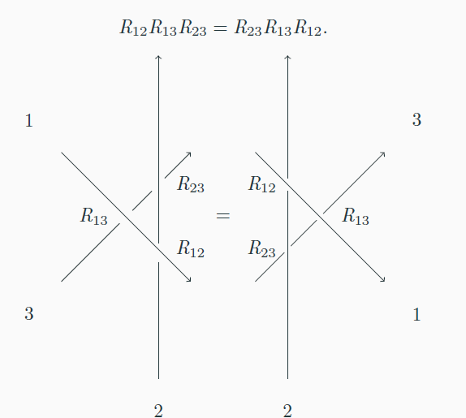

Accessibility statement: these notes will eventually be WCAG2.1AA compliant, once I finish writing them. I tested it out using NVDA, a screen reader. It works best if you uncheck “graphic” and “clickable” in the settings.
Broadly speaking, integrable probability is a branch of probability theory which studies models which have exact solutions. For this reason, these models are often called exactly solvable. From these exact solutions, one can derive precise universal asymptotics, such as the famed Tracy–Widom distribution. The origin of these solutions are usually due to algebraic symmetries underlying the model. In these set of lecture notes, we will introduce the relevant algebraic background with a probabilistic researcher as the target audience.
For historical context, the terminology originates in integrable systems from Hamiltonian mechanics. In Hamiltonian mechanics, the phase space is represented as a smooth manifold with even dimension \(2n,\) with coordinates denoted \(q_1,\ldots ,q_n,p_1,\ldots ,p_n\) for the momentumm and position. An integrable system is a system with \(n\) conserved quantities, and the Liouville–Arnold theorem states that the equations of motion can be solved in quadratures. For an explicit example, the harmonic oscillator in one dimension (imagine an object attached to a frictionless spring) is integrable, and the conserved quantity is the total energy. In contrast, the three–body problem is not integrable, and its solutions are notoriously non–exact.
During the 1980s, many Soviet mathematicians and physicsts introduced quantum mechanics into integrable systems. In quantum mechanics, quantities such as position, momentum and energy became operators which generally do not commute; additionally, the values of these quantities only take discrete, “quantized” values. In this context, the concept of “conserved quantities” becomes “commuting operators,” and values of the quantities are eigenvalues of eigenstates. At the time, their approaches were called the “quantum inverse scattering method.” Since then, the method has been generalized to abstract algebraic objects, such as Hopf algebras.
These notes will introduce one such algebraic object, known as quantum groups, with a particular focus on the Yang–Baxter equation. The exposition will use probability and mathematical physics as a motivation. The goal is for a reader with a probability background to be able to read contemporary (as of 2024) research papers in integrable probability.
Acknowledgements. The author was supported by the London Mathematical Society.
To begin to motivate the notes, we first introduce the asymmetric simple exclusion process (ASEP) and its relationship to the Heisenberg XXZ model and the quantum group \(U_q(sl_2).\)
In ASEP, particles randomly jump on a lattice, which we assume to be one–dimensional. At most one particle may occupy a site, and jumps to occupied sites are blocked (hence the term “exclusion”). Jumps are nearest neighbour (hence the term “simple”). If the jumps are continuous–time exponential clocks with left rates \(\alpha \) and right rates \(\beta ,\) then let \(q=\sqrt {\beta /\alpha }\) denote the asymmetry parameter. If \(q\neq 1,\) then the model is asymmetric (sometimes partially asymmetric), while for \(q=1\) the model is symmetric. For \(q=0\) or \(q=\infty \) the model is called totally asymmetric. The symmetric exclusion process (without the word simple) can be defined more generally on an arbritrary graph. In princple, so can the asymmetric exclusion process, although this is not as well studied.
The generator of the simple exclusion process can be explicitly written. In the most elementary case where there are two lattice sites, then there are four possible configurations. Associate to each particle the vector \([1\ 0]\) and to each hole (i.e. a non–particle) the vector \([0 \ 1].\) Tensoring the vectors together, we can associate to each configuration a canonical basis element of the four–dimensional vector space \(\mathbb {C}\otimes \mathbb {C}.\) The field here is chosen to be the complex numbers because it is algebraically closed, although of course probabilities are real numbers.

With that set up, the generator is then a \(4\times 4\) matrix \[ \alpha \left ( \begin{array}{cccc} 0 & 0 & 0 & 0 \\ 0 & -1 & 1 & 0 \\ 0 & q^2 & -q^2 & 0 \\ 0 & 0 & 0 & 0 \end{array} \right ). \] The constant \(\alpha \) can be viewed as a time rescaling, so it can be removed without loss of generality.
In a more general setting, where there are \(N\) lattice sites, the generator can be defined from the above \(4\times 4\) matrix, which we now denote \(\mathcal {L}.\) The generator is now a \(2^N \otimes 2^N\) and acts on \((\mathbb {C}^2)^{\otimes N}.\) Define \(\mathcal {L}_{i,i+1}\) by \[ \mathcal {L}_{i,i+1} = (\mathrm {Id}_2)^{i-1} \otimes \mathcal {L} \otimes (\mathrm {Id}_2)^{N-1}. \] With this notation, the generator is \[ \sum _{i=1}^{N-1} \mathcal {L}_{i,i+1}. \] Similar notation using subscripts will be used throughout these notes.
The corresponding notion of integrability in the quantum case comes from Yang–Baxter equation. It was shown by Baxter that when a matrix solves the Yang–Baxter equation, there are corresponding “commuting transfer matrices,” which are analogous to conserved quantities in the classical setting.
Using the same notation as in the previous section, we say that a matrix \(R\) solves the braided Yang–Baxter Equation if: \[ R_{12}R_{23}R_{12} = R_{23}R_{12}R_{23}. \] Somewhat confusingly, this equation is also sometimes called the braid equation or just the Yang–Baxter equation. An equivalent formulation is \[ R_{12}R_{13}R_{23} = R_{23}R_{13}R_{12} \] (exercise left to the reader).
A visual representation of YBE is given by this image:

In some settings, the YBE occurs in the scattering of particles with quantum mechanics considerations, such as the QISM (quantum inverse scattering method.)
Given an arbitrary matrix \(R,\) one can check that it satisfies the YBE through direct computation. However, it maybe more helpful to consider some simple examples first.
If \(P: V \otimes V \rightarrow V \otimes V\) denotes the permutation operator which sends \(u \otimes v\) to \(v \otimes u,\) then the braided Yang–Baxter equation becomes an identity of transpositions: \[ (1\ 2) \circ (2 \ 3 ) \circ (1 \ 2 ) = (2 \ 3) \circ (1 \ 2) \circ (2 \ 3). \] This identity holds, since both sides equal the permutation \((1\ 3).\) An even more simple solution is the identity matrix.
A probabilist may remark that a permutation matrix and an identity matrix are both examples of a stochastic matrix, albeit somewhat trivial examples. It may then be natural to try to find more general stochastic matrices which solve the Yang–Baxter equation. The “simplest” generalization occurs when \(V\) is two–dimensional, with basis \(e_1,e_2.\) Using exclusion processes as a prototype, we can define the operator \(R_{\alpha \beta }\) by \[ R_{\alpha \beta }(e_1 \otimes e_1) = e_1 \otimes e_1, \quad R_{\alpha \beta }(e_2\otimes e_2) = e_2 \otimes e_2 \] and \begin{align*} R_{\alpha \beta }(e_1 \otimes e_2) &= (1-\alpha )e_1 \otimes e_2 + \alpha e_2 \otimes e_1,\\ R_{\alpha \beta }(e_2 \otimes e_1) &= \beta e_1\otimes e_2 + (1-\beta )e_2 \otimes e_1. \end{align*}
Inserting this matrix into the Yang–Baxter equation and evaluating at \(e_1 \otimes e_1 \otimes e_2,\) one finds that \(\alpha (1-\beta )=0\) is a necessary requirement for a solution to YBE. Evaluating \( R_{\alpha ,1}\) and \(R_{0,\beta }\) at \(e_1\otimes e_2 \otimes e_1\) and \(e_2 \otimes e_1 \otimes e_1\) yields no aditional equations. (Exercise left to the reader)
One could also evaluate YBE at the three vectors \(e_2 \otimes e_1 \otimes e_1,e_1\otimes e_2 \otimes e_1\) and \(e_1 \otimes e_1 \otimes e_2,\) but instead we use another symmetry of ASEP. This is called particle–hole involution. In words, in an ASEP with drift to the right, the holes evolve as an ASEP with drift to the left. Symbolically, we define an involution \(T\) of \(V\) which switches \(e_1\) and \(e_2.\) Then \[ T^{\otimes 2} R_{\alpha ,\beta }T^{\otimes 2} = R_{\beta ,\alpha }, \quad \quad T^{\otimes 2} R_{\alpha ,\beta } = R_{1-\alpha ,1-\beta }, \quad \quad R_{\alpha ,\beta }T^{\otimes 2} = R_{1-\beta ,1-\alpha }. \] A mildly helpful observation here is that \(T\) is stochastic, so its composition with other stochastic matrices is also stochastic. Using these identities, one immediately verifies YBE for \(R_{\alpha ,0}\) and \(R_{1,\beta }.\) Furthermore, these two solutions are related up to the particle–hole involution.
One notices that \(R_{\alpha ,0}-\mathrm {id}_4\) is the generator of ASEP at two lattice sites. It is then natural to ask whether or not addition by constants affects integrability. The answer is “no” (otherwise integrable probability would not exist). As some intuition, let us suppose that the generator has an explicit set of eigenvectors and eigenvalues. In general, an arbitrary Markov process will have complicated eigenvectors and eigenvalues, but for integrable models we expect “nice” eigenvectors and eigenvalues, from which probabilistic information can be extracted. Then addition by constants leaves the eigenvectors unaffects and only shifts the eigenvalues, leaving them just as “nice.” Thus, it is fair to say that ASEP is integrable, at least on two lattice sites.
At this juncture, it is reasonable to object that nothing has been said about the integrability of ASEP on arbitrarily many lattice sites. We will put this question on hold, as the next section’s discussion of the XXZ model will lay the foundation for answering this question.
Having established that ASEP is an integrable model at two lattice sites, it is natural to ask about other integrable models that look similar to ASEP, so that we can avoid re–inventing the wheel. Thus we now turn our attention to a related model, called the quantum Heisenberg model. These were introduced by Werner Heisenberg to incorporate quantum mechanics into magnetism. Each lattice site has a microscopic magnetic dipole, which can either be up or down. If there are \(N\) lattice sites, then the Hamiltonian acts on the \(2^N\)–dimensional vector space \((\mathbb {C}^2)^{\otimes N}.\) So, at the very least, the state space of the XXZ model is the same as the ASEP state space.
To define the model, first recall that Pauli spin matrices: \[ \sigma ^1 = \left (\begin{array}{cc} 0 & 1 \\ 1 & 0 \end{array}\right ), \quad \quad \sigma ^2 = \left ( \begin{array}{cc} 0 & -i \\ i & 0 \end{array}\right ), \quad \quad \sigma ^3 = \left ( \begin{array}{cc} 1 & 0 \\ 0 & -1 \end{array}\right ). \] The notation \(\sigma ^x,\sigma ^y,\sigma ^z\) are often used instead. Note that these are traceless and are Hermitian, the latter property being important in physics (since Hermitian matrices have real eigenvalues, and these eigenvalues correspond to physical quantities). Letting \[ \sigma ^a_j = (\mathrm {Id})^{\otimes j-1} \otimes \sigma ^a \otimes (\mathrm {Id})^{\otimes N-j} \] so that \(\sigma ^a_j\) acts on the \(j\)–th lattice site while fixing the others, the Hamiltonian is then \[ \frac {-1}{2}\sum _{j=1}^N \left ( J_x \sigma ^1_j \sigma ^1_{j+1} + J_y \sigma ^2_j \sigma ^2_{j+1} + J_z \sigma ^3_j\sigma ^3_{j+1} - h\sigma ^3_j\right ). \] where \(J_x,J_y,J_z\) are some coupling constants and \(h\) is the external field. We impose periodic boundary conditions, so that \(\sigma ^a_{N+1}=\sigma ^a_1.\) If \(J_x,J_y,J_z\) are distinct then one obtains the XYZ model. If \(J_x=J_y \neq J_z\) then this is the XXZ model; if \(J_x=J_y=J_z\) then it is the XXX model.
Each summand in the Hamiltonian can be written as a four by four matrix: \[ \left (\begin{array}{cccc} J_z + 2h & 0 & 0 & J_x-J_y \\ 0 & -J_z & J_x + J_y & 0 \\ 0 & J_x + J_y & -J_z & 0 \\ J_x - J_y & 0 & 0 & J_z-2h \end{array}\right ) \] If \(J_x=J_y,\) as assumed in the XXZ model, then the top–right and bottom–left entries are zero. In this case, the non–zero entries are at least the same as in the ASEP generator. Recalling the previous section’s heuristic that adding by constants does not change integrability, we can set \(J_z=1,h=0\) to obtain the matrix \[ \mathrm {Id}_4 + \left ( \begin{array}{cccc} 0 & 0 & 0 & 0 \\ 0 & -2 & 2J_x & 0 \\ 0 & 2J_x & -2 & 0\\ 0 & 0 & 0 & 0 \end{array}\right ). \]
At this point, it is worth noticing that the YBE is a statement about operators on vector spaces, which should not depend on the choice of bases on the vector spaces. In other words, conjugation (which corresponds to a change of basis) should not affect integrability. As it turns out, conjugation by \[ \left ( \begin{array}{cccc} 1 & 0 & 0 & 0 \\ 0 & 1 & \gamma -1 & 0 \\ 0 & 0 & \gamma & 0 \\ 0 & 0 & 0 & 1 \end{array} \right ) \] results in the ASEP generator on two sites. (Exercise left to the reader).
So far, we have determined that ASEP is integrable and is conjugate to the XXZ Hamiltonian (assuming that we are ignoring the question of arbitrary lattice sizes). As it turns out, the Pauli matrices form a basis of the real Lie algebra \(su_2\) corresponding to the real compact Lie group \(SU(2).\) Here, a real Lie group means that the underlying field is the real numbers, not that all the entries are real (consider the unit circle in the complex plane as a real Lie group, for example).
The complex variant of \(SU(2)\) is the (non–compact) Lie group \(SL(2,\mathbb {C})\) of traceless \(2 \times 2\) matrices with complex entries. For a variety of reasons, some of which answer historical, most mathematicians are introduce to the Lie algebra \(sl_2\) rather than \(su_2,\) so we will use that notation.
By definition, \(sl_2\) is the Lie algebra with basis denoted \(e,f,h\) and brackets \[ [e,f]=h, \quad [h,e]=2e, \quad [h,f]=-2f. \] Note that the explicit matrices \(E_{12},E_{21},E_{11}-E_{22}\) satisfy these relations, where \(E_{ij}\) denotes the matrix with a \(1\) at the \(i,j\)–entry and a 0 everywhere else.
Returning to the XYZ model, one can calculate that the XXX model has \(SU(2)\) symmetry (exercise to the reader) in the sense that \[ \sum _{j=1}^N \sigma ^a_j \] commutes with the Hamiltonian of the XXX model for \(a=x,y,z.\) However, for the XXZ model, the commutation only works for \(a=z.\) Therefore, whatever algebra is underlying the XXZ model (and hence that of ASEP), we know that it can not be as simple as \(SU(2).\) Futhermore, since XXZ and ASEP have a free parameter, the algebra should be a one–parameter deformation of \(SU(2).\) This leads into the next topic of quantum groups.
The Drinfel’d–Jimbo quantum groups are quantizations of the Lie groups. Rather confusingly, the quantum groups are not themselves groups.
Before diving into the rigorous definition, one notes where the quantization occurs. Using probabilistic intuition, we expect that the SSEP should have an underlying \(sl_2\) symmetry, whereas the ASEP should have the quantum group symmetry. However, SSEP and ASEP on a single lattice site are identical, so the quantization must require multiple lattice sites. We’ve established that in this case, the vector space is \((\mathbb {C}^{\otimes 2})^{\otimes N}.\) This raises the question: how does \(sl_2\) act on tensor powers?
To answer this question, we take an aside about Lie algebras, which are tangent spaces to Lie groups at the origin. What this implies is that for a Lie group \(G\) with a Lie algebra \(g,\) we have that \[ X \in g \text { implies } \exp (tX) \in G \text { for all } t\in \mathbb {R} \] and \[ X = \frac {d}{dt} \exp (tX) \Big |_{t=0}. \] Setting \(g=g_X(t)=\exp (tX),\) the natural action of a group on tensor products is \[ g(v \otimes w)= gv \otimes gw. \] Taking derivatives and heuristically using Leibniz’s rule for derivative of products, we obtain \[ X(v \otimes w) = Xv \otimes w + v \otimes Xw. \] This is expressed through the co–product \(\Delta : g \rightarrow g \otimes g\) defined by \[ \Delta (X) = 1 \otimes X + X \otimes 1. \]
Since it is the co–product that allows for the algebra to act on multiple lattice sites (i.e. tensor powers), the quantization occurs in the co–product, not the algebra itself! As it turns out, the right deformation is \[ \Delta (e) = q^h \otimes e + e \otimes 1, \quad \Delta (f) = 1 \otimes f + f \otimes q^{-h}, \quad \Delta (h)=h\otimes 1 + 1\otimes h, \] where we interpret \(q^h\) as a formal power series in \(h.\) Note that we do not deform the co–product of \(h,\) which is consistent with \(\sigma ^z\) commuting with the XXZ model.
Depending on the preferences of the author, the generator \(h\) may be replaced with \(k:=q^h\) with the co–product becoming \[ \Delta (k) = k \otimes k. \] (Exercise to the reader why that is the same co–product). In words, \(h\) is primitive and \(k\) is group–like.
While I presented the co–product as the object that allows for multiple lattice sites, that is of course not how it is presented to algebraists. A more common description is that a co–algebra is dual to an algebra, with the co–product dual to the product. This subsection will provide a rigorous definition of a co–algebras.
Recall that an algebra \(A\) is a vector space with a multiplication operator \[ m: A \otimes A \rightarrow A \] which assumed to be bilinear. It is also associative in the sense that \[ m(x \otimes m(y \otimes z)) = m(m(x \otimes y) \otimes z), \] which essentially means that \( x(yz) = (xy)z.\) This is equivalently stated as \[ m \circ (m \otimes \mathrm {id}) = m \circ (\mathrm {id} \otimes m). \] Additionally, there is an identity element \(1 \in A\) satisfying \[ m(1 \otimes x) = m(x \otimes 1) = x. \] This can be written as an inclusion from the underlying field \(F\) to the algebra \(A.\)
Before defining co–algebras, it will be useful to draw certain
commutative diagrams. The associativity can be written as
![[Picture]](basicWorksheet-54a8f2c7f65c472552e801c15602bfd1.svg)
If one reverses the arrow of this diagram, which is also fortunately easy on Tikz, one
obtains ![[Picture]](basicWorksheet-eaf25e55d93c6acbae10fa1bd95c315a.svg) The condition of co–associativity means that this diagram commutes.
The condition of co–associativity means that this diagram commutes.
RTT construction?
Fusion?
Orthogonal polynomial vertex weights?